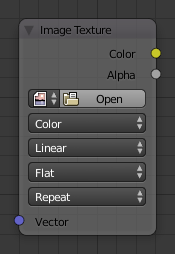

Image Texture Node¶

Image Texture Node.
The Image Texture is used to add an image file as a texture.
Inputs¶
- Vector
- Texture coordinate for texture lookup. If this socket is left unconnected, UV coordinates from the active UV render layer are used.
Properties¶
- Image Data-Block
- Image data-block used as the image source. Currently not all images supported by Blender can be used by Cycles. In particular, generated, packed images or animations are not supported currently.
- Color Space
- Type of data that the image contains, either Color or Non-Color Data. For most color textures the default of Color should be used, but in case of e.g. a bump or alpha map, the pixel values should be interpreted as Non-Color Data, to avoid doing any unwanted color space conversions.
- Interpolation
- ToDo.
- Projection
Projection to use for mapping the textures.
- Flat
- Uses the XY coordinates for mapping.
- Box
Maps the image to the six sides of a virtual box, based on the normal, using XY, YZ and XYZ coordinates depending on the side.
- Blend
- For Box mapping, the amount to blend between sides of the box, to get rid of sharp transitions between the different sides. Blending is useful to map a procedural-like image texture pattern seamlessly on a model. 0.0 gives no blending; higher values give a smoother transition.
- Sphere
- Sphere mapping is the best type for mapping a sphere, and it is perfect for making planets and similar objects. It is often very useful for creating organic objects.
- Tube
- Maps the texture around an object like a label on a bottle. The texture is therefore more stretched on the cylinder. This mapping is of course very good for making the label on a bottle, or assigning stickers to rounded objects. However, this is not a cylindrical mapping so the ends of the cylinder are undefined.
- Extension
Extension defines how the image is extrapolated past the original bounds:
- Repeat
- Will repeat the image horizontally and vertically giving tiled-looking result.
- Extend
- Will extend the image by repeating pixels on its edges.
- Clip
- Clip to the original image size and set all the exterior pixels values to transparent black.
Outputs¶
- Color
- RGB color from image. If the image has alpha, the color is premultiplied with alpha if the Alpha output is used, and unpremultiplied or straight if the Alpha output is not used.
- Alpha
- Alpha channel from image.
Examples¶

Image texture from GoodTextures.com.